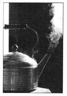
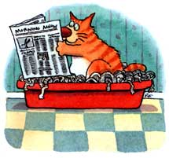
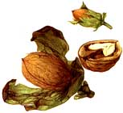

Country Lore
Adding a bit of lemon can save the lives of your kitchen utensils.
Compared to urban water, water from country wells is often hard. While more healthful than soft water because of its mineral content, hard water can be destructive to cooking utensils. But scientists have found one solution, especially for tea kettles. Tea grime left in tea kettles and cups can be eliminated by adding lemon juice when brewing or steeping tea.
Studies conducted by scientists at the Imperial College of Science, Technology, and Medicine in London found that the tea grime only occurs when tea is brewed in hard water. The grime, when viewed under a microscope, is actually caused by calcium and other minerals present in hard water. Grime did not form when soft or distilled water was used. The acid in lemon juice reacts chemically with the minerals, thus preventing the scum from forming.
- Marilyn Porokney
Ord, NE
If you have pets and are worried about spreading chemical fertilizers, try soy bean meal instead. While soybean meal is not a complete fertilizer, it is high in nitrogen and causes your grass to green up nicely. In fact, it is considered by many to be one of the finest soil conditioners, so you might try it in your garden also.
The only problem is dogs love to eat it. It is found in so many dog foods and does not seem to cause them harm.
While soybean meal does not seem to cause any burning of the grass, I would recommend several applications rather than one heavy one. Meal is available in most feed stores.
-Tom Fulcher
Glenelg, MD
When we needed to cover loads in our little VW pickup, my husband mounted small plastic hooks, open end down, along the outside of the truck bed to hook a tarp on. Eventually the tarp ripped to shreds. So I grabbed a piece of fish net, which stretched neatly and hooked over the sides. It worked so well we've never replaced the tarp. Nets that are used to cover fruit trees work just as well.
-Margaret P. Beals
Marshfield, MA
Here are a couple of tips to make your hand-m owing experience easier. First, sharpen both edges of blade for forward and backward cutting. Using a file, cut seven or eight teeth on the end of the mower blade. It chews up leaves and grass and you don't need an expensive mulcher. P.S. Always be sure to wear leather shoes!
- Stan Lubecki
Rome, NY
After harvesting my walnut trees for 12 years and suffering the dreaded "dirty hands" plague for 30 days afterwards, I found a cleaner that works immediately. Just wet a tissue with fingernail polish remover and wipe away the stain. It works like magic!
Also, hulling walnuts is a pain. Last year I left a bushel in a black plastic bag till the hulls were entirely black and mushy. Then I poured them on the ground and sprayed away the debris with the garden hose! I dried them for a day in the sun, and they were great all winter-no moldy or musty taste at all.
-Sharon Shreve
Avoid paying 10c to 284 per pound for cat litter. Newspaper cat litter is safer, recyclable, and free. Most cat litter is made from dried clay, which is rough on the pads of cats' paws, can cause pain and lead to infection. Clay litter can also be tracked through the house, spreading germs and mess. Newspaper, on the other hand, is soft and cannot get between paws; it is also recyclable.
For your liner, take two sections of newspaper that are of medium thickness. Place them into the litter box with the two folded edges facing one another. Next grab another section of the newspaper and, holding it by the folded edge, tear off enough strips to fill the box. (Tearing off strips while holding the folded edges seems to be the only way to get even strips that tear off easily.) If you prefer to cover wastes more than your cat has, add a few more strips to those already in the box. Dispose of the box's contents when full.
-Richard A. Bowen
Jacksonport, WI
Editor's Note: Next issue "Country Lore" will be even bigger. But we'll need more of your practical, down-home suggestions and solutions to make it work. Please, share the wisdom and send your Country Lore contributions (along with a photo, ifyou want to be famous) to "Lore," Mother Earth News, P.O. Box 129, Arden, NC 28704.
|
 |
 |
 |